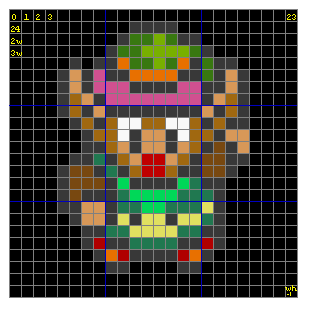
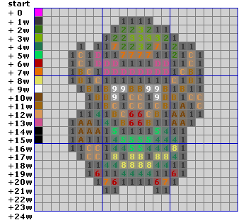
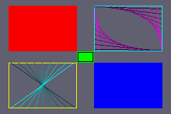
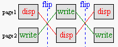
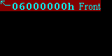
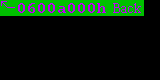
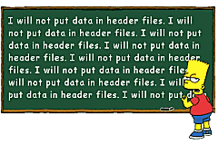
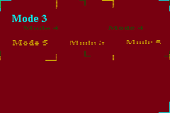
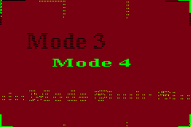
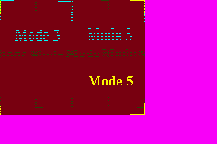

5. 位图模式（模式 3、4、5）
介绍
在本章中，我们会了解位图模式。位图模式是个不错的起点，因为内存内容与屏幕上的像素之间是一一对应的。我们将简要讨论所有位图模式的基本要点，并以模式 3 为例仔细看看你能做什么。我们也会看到一点页翻转（page flipping，模式 4），它能带来更流畅的动画。
本章将以一节关于如何处理数据以及计算机内存总体情况的内容结束。由于 GBA 编程非常贴近硬件，你需要了解这些东西。如果你已经编程（用 C 或汇编）很久，并且对数据、数据类型和内存有了很好理解，你大概可以跳过它；但对其余的人，我强烈建议你读一读，因为它对之后所有章节都非常重要。
位图入门
Fig 5.1: Link (24x24 bitmap).
在 fig 5.1 中你可以找到一个让任天堂声名大噪的游戏角色的位图。这大概就是大多数人心目中位图的模样：一个彩色像素的网格。为了在程序中使用位图，我们需要知道它们在内存中是如何排列的。为此我们用图 5.2（下方）；这是 fig 5.1 放大后的版本，上面叠加了像素网格和一些数字。
位图不过是一个 w×h 的颜色（或颜色索引）矩阵，其中 w 是列数（宽度），h 是行数（高度）。某个特定像素可以用一个坐标对表示：(x, y)。顺便说一下，GBA 的 y 轴指向下，而不是上。所以像素 (0, 0) 在左上角。在内存中，位图的各行是顺序排列的，因此以下规则成立：在 w×h 位图中，像素 (x, y) 是第 (w×y + x) 个像素。顺便说一句，这对所有 C 矩阵都成立。
Fig 5.2 展示了这是如何运作的。这是一个 w=24、h=24 的位图，位深为 8bpp（8 Bits Per Pixel，即每像素 8 位 = 1 字节）。黄色的数字表示内存位置；如果你不相信我，可以自己数一数。第一个像素 (0, 0) 位于位置 0。第一行的*最后一个*像素 (23, 0) 在 w−1（本例中是 23）。第二行的第一个像素 (0, 1) 在 w（=24），依此类推，直到最后一个像素 w×h−1。
|
 Fig 5.2a: zoom out of fig 5.1, with pixel offsets. |
 Fig 5.2b：fig 5.1 的放大视图，带有像素值。 为清晰起见省略了零。调色板在左侧。 |
不过注意，当你使用另一种位深时，地址也会改变。例如，在 16bpp（每像素 2 字节）下，你需要把像素编号乘以 2。或者使用另一种数据类型作为你的数组。通用公式留作读者的练习。
通常重要的其实不是宽度（即一行中的像素数），而是跨度（pitch）。跨度定义为一条扫描线中的字节数。对于 8bpp 图像，跨度和宽度通常相同，但对于 16bpp 图像（每像素 2 字节），跨度是宽度的两倍。还有一个陷阱：内存对齐。对齐会在后面一节讨论，但要点是，系统通常有一个“偏好”的类型大小，如果地址是该类型大小的倍数，系统能更好地处理数据。这就是为什么某些位图文件格式中的扫描线总是对齐到 32 位边界。
GBA 位图模式
视频模式 3、4 和 5 是位图模式。要使用它们，把 3、4 或 5 放进 REG_DISPCNT 的最低几位，并启用 BG2。你可能奇怪我们为什么从模式 3 开始，而不是模式 0。原因就是位图比图块地图（tilemaps）容易理解得多。而这是唯一的原因。事实是，位图模式对于大多数常规 GBA 游戏来说实在太慢了。我无法给出确切数字，但如果有人说 90% 或更多的 GBA 游戏用的是图块模式而非位图模式，我不会感到惊讶。位图模式唯一有利的情况，要么是屏幕非常静态（开场演示），要么是屏幕非常动态（如《星际火狐》或《毁灭战士》这类 3D 游戏）。
位图模式具有以下特征：
| mode | width | height | bpp | size | page-flip |
|---|---|---|---|---|---|
| 3 | 240 | 160 | 16 | 1× 12C00h | No |
| 4 | 240 | 160 | 8 | 2× 9600h | Yes |
| 5 | 160 | 128 | 16 | 2× A000h | Yes |
宽度、高度和 bpp 的含义现在应该清楚了；位图所需的大小就是 width × height × bpp/8。页翻转可能需要更多解释，但首先我们看一些模式 3 图形的例子。
在模式 3 中绘制图元
我们已经见过如何绘制像素，现在该画一些线和矩形了。水平线几乎平平无奇：因为像素在相邻的内存中，你只需要一个从起点 x 到终点 x 的简单循环。垂直线也几乎一样简单：虽然像素不是紧挨着彼此，但它们之间有一个固定的偏移量，即跨度（pitch）。所以同样只需要一个简单的循环。矩形本质上是多条水平线，因此也同样简单。
对角线稍微棘手一些，原因有几个。对角线有一个斜率，表示在移到下一条扫描线之前需要走多少水平步。这只有在斜率的绝对值小于 1 时才有效，否则像素之间会出现空隙。对于更高的斜率，你需要垂直递增，水平绘制。
另一点是如何让例程快到真正有用。幸运的是，这些事情过去都已经有人想通了，所以我们这里直接使用结果。本例中，我们对画线使用 Bresenham 中点算法（Bresenham Midpoint），并做了修改以分别处理水平和垂直线。虽然我可以解释这个例程到底做了什么，但那确实超出了本章范围。
我在这里忽略了两点：归一化（normalization）和裁剪（clipping）。归一化是指确保例程朝着正确方向运行。例如，当实现一个通过递增 for 循环从 x1 跑到 x2 的画线例程时，你最好先确保 x2 确实大于 x1。裁剪是指把图元裁cut以适应视口。虽然这是件好事，但我们会省略它，因为要做好它可能会相当麻烦。
下面的代码是 m3_demo 中 toolbox.c 的节选，包含了在 16bpp 画布（如模式 3 和模式 5）上绘制线、矩形和边框的函数。dstBase 是画布的基指针，dstPitch 是跨度。其余参数应该一目了然。
#include "toolbox.h"
//! Draw a line on a 16bpp canvas
void bmp16_line(int x1, int y1, int x2, int y2, u32 clr,
void *dstBase, uint dstPitch)
{
int ii, dx, dy, xstep, ystep, dd;
u16 *dst= (u16*)(dstBase + y1*dstPitch + x1*2);
dstPitch /= 2;
// --- Normalization ---
if(x1>x2)
{ xstep= -1; dx= x1-x2; }
else
{ xstep= +1; dx= x2-x1; }
if(y1>y2)
{ ystep= -dstPitch; dy= y1-y2; }
else
{ ystep= +dstPitch; dy= y2-y1; }
// --- Drawing ---
if(dy == 0) // Horizontal
{
for(ii=0; ii<=dx; ii++)
dst[ii*xstep]= clr;
}
else if(dx == 0) // Vertical
{
for(ii=0; ii<=dy; ii++)
dst[ii*ystep]= clr;
}
else if(dx>=dy) // Diagonal, slope <= 1
{
dd= 2*dy - dx;
for(ii=0; ii<=dx; ii++)
{
*dst= clr;
if(dd >= 0)
{ dd -= 2*dx; dst += ystep; }
dd += 2*dy;
dst += xstep;
}
}
else // Diagonal, slope > 1
{
dd= 2*dx - dy;
for(ii=0; ii<=dy; ii++)
{
*dst= clr;
if(dd >= 0)
{ dd -= 2*dy; dst += xstep; }
dd += 2*dx;
dst += ystep;
}
}
}
//! Draw a rectangle on a 16bpp canvas
void bmp16_rect(int left, int top, int right, int bottom, u32 clr,
void *dstBase, uint dstPitch)
{
int ix, iy;
uint width= right-left, height= bottom-top;
u16 *dst= (u16*)(dstBase+top*dstPitch + left*2);
dstPitch /= 2;
// --- Draw ---
for(iy=0; iy<height; iy++)
for(ix=0; ix<width; ix++)
dst[iy*dstPitch + ix]= clr;
}
//! Draw a frame on a 16bpp canvas
void bmp16_frame(int left, int top, int right, int bottom, u32 clr,
void *dstBase, uint dstPitch)
{
// Frame is RB exclusive
right--;
bottom--;
bmp16_line(left, top, right, top, clr, dstBase, dstPitch);
bmp16_line(left, bottom, right, bottom, clr, dstBase, dstPitch);
bmp16_line(left, top, left, bottom, clr, dstBase, dstPitch);
bmp16_line(right, top, right, bottom, clr, dstBase, dstPitch);
}
这些函数非常通用：它们对任何带 16 位颜色的东西都有效。也就是说，每次都要加上画布指针和跨度可能很烦人，所以你可以专门为模式 3 和模式 5 创建一个接口层（interface layer）。用于模式 3 的接口大概像这样：
typedef u16 COLOR;
#define vid_mem ((COLOR*)MEM_VRAM)
#define M3_WIDTH 240
// === PROTOTYPES =====================================================
INLINE void m3_plot(int x, int y, COLOR clr);
INLINE void m3_line(int x1, int y1, int x2, int y2, COLOR clr);
INLINE void m3_rect(int left, int top, int right, int bottom, COLOR clr);
INLINE void m3_frame(int left, int top, int right, int bottom, COLOR clr);
// === INLINES ========================================================
//! Plot a single \a clr colored pixel in mode 3 at (\a x, \a y).
INLINE void m3_plot(int x, int y, COLOR clr)
{
vid_mem[y*M3_WIDTH+x]= clr;
}
//! Draw a \a clr colored line in mode 3.
INLINE void m3_line(int x1, int y1, int x2, int y2, COLOR clr)
{
bmp16_line(x1, y1, x2, y2, clr, vid_mem, M3_WIDTH*2);
}
//! Draw a \a clr colored rectangle in mode 3.
INLINE void m3_rect(int left, int top, int right, int bottom, COLOR clr)
{
bmp16_rect(left, top, right, bottom, clr, vid_mem, M3_WIDTH*2);
}
//! Draw a \a clr colored frame in mode 3.
INLINE void m3_frame(int left, int top, int right, int bottom, COLOR clr)
{
bmp16_frame(left, top, right, bottom, clr, vid_mem, M3_WIDTH*2);
}
最后，还有一个 m3_fill() 函数，用单一颜色填充整个模式 3 画布。
//! Fill the mode 3 background with color \a clr.
void m3_fill(COLOR clr)
{
int ii;
u32 *dst= (u32*)vid_mem;
u32 wd= (clr<<16) | clr;
for(ii=0; ii<M3_SIZE/4; ii++)
*dst++= wd;
}

Fig 5.3: drawing in mode 3.现在，注意我在这里做了什么：我并没有把 VRAM 当作由 16 位值（适合 16bpp 颜色）组成的数组来处理，而是用了一个 32 位指针，用包含一个双色的 32 位变量来填充 VRAM。当填充大块内存时，用 N 个 16 位块填充，还是用 ½N 个 32 位块填充，没有区别。然而，由于后一种情况迭代次数只有前者的一半，它大约快两倍。在 C 中，做这样的事完全合法（前提是满足严格别名规则），而且常常确实有用。这就是为什么理解数据和内存的原理很重要。还要注意的是，我在这里用了指针算术而非数组下标。虽然编译器通常自己会做这个转换，但手动做往往还是会快一点。（如有疑问，看看 GCC 生成的汇编语言。）
虽然这个方法已经比“普通”方法快了一倍，但其实还有快得多的办法。我们以后会用到它们，当我们不再使用单独的工具箱文件，而是开始使用 libtonc——Tonc 的代码库。Tonclib 包含了上面描述的函数（只是更快），以及 bmp16_ 例程的 8bpp 变体，还有模式 4 和模式 5 的接口。
下面你可以找到 m3_demo 的主代码，它使用 m3_ 函数在屏幕上画一些东西。严格来说，使用这么多魔法数字是不好的风格，但为了演示目的应该没问题。结果可以在 fig 5.3 中看到。
#include "toolbox.h"
int main()
{
int ii, jj;
REG_DISPCNT= DCNT_MODE3 | DCNT_BG2;
// Fill screen with grey color
m3_fill(RGB15(12, 12, 14));
// Rectangles:
m3_rect( 12, 8, 108, 72, CLR_RED);
m3_rect(108, 72, 132, 88, CLR_LIME);
m3_rect(132, 88, 228, 152, CLR_BLUE);
// Rectangle frames
m3_frame(132, 8, 228, 72, CLR_CYAN);
m3_frame(109, 73, 131, 87, CLR_BLACK);
m3_frame( 12, 88, 108, 152, CLR_YELLOW);
// Lines in top right frame
for(ii=0; ii<=8; ii++)
{
jj= 3*ii+7;
m3_line(132+11*ii, 9, 226, 12+7*ii, RGB15(jj, 0, jj));
m3_line(226-11*ii,70, 133, 69-7*ii, RGB15(jj, 0, jj));
}
// Lines in bottom left frame
for(ii=0; ii<=8; ii++)
{
jj= 3*ii+7;
m3_line(15+11*ii, 88, 104-11*ii, 150, RGB15(0, jj, jj));
}
while(1);
return 0;
}
一点模式 4
模式 4 是另一种位图模式。它也有一个 240×160 的帧缓冲，但不用 16bpp 像素，而是用 8bpp 像素。这 8 位是指向位于 0500:0000 的背景调色板的一个调色板索引（palette index）。你在屏幕上看到的颜色，就是调色板中该位置的颜色。
像素位深为 8 意味着你一次只能用 256 种颜色（而不是 15bpp 情况下的 32768 种），但也有好处。其一，你可以通过简单地改变调色板中的颜色来操纵许多像素的颜色。8bpp 的帧缓冲占用的内存也只有 16bpp 缓冲的一半。这不仅填充起来更快（嗯，原则上如此），而且还为第二个缓冲留出了空间，以实现页翻转。为什么这有用，我们一会儿就讲。
不过，使用模式 4 有一个主要缺点，源于一个硬件限制。对于 8 位像素，把 VRAM 映射为一个字节数组似乎很合理。如果不是因为那个相当恼人的事实——VRAM 不允许字节写入！——这本来是没问题的。现在，因为这一点非常重要，让我重复一遍：你不能向 VRAM 写入单字节！！！。字节读取没问题，但写入必须以 16 位或 32 位的块进行。如果你确实以字节方式写入 VRAM，你访问的那个半字（halfword）最终会变成那个字节同时被复制到低位和高位字节中：你一次设置了两个像素。注意，这个“禁止字节写入”规则也延伸到调色板内存和 OAM，但在那里不会造成麻烦，因为你本来也不会把它们当字节用。
那么如何绘制单像素呢？嗯，你必须读取你想要访问的整个半字，掩掉你不想覆盖的位，插入你的像素，然后再写回去。代码如下：
#define M4_WIDTH 240 // Width in mode 4
u16 *vid_page= vid_mem; // Point to current frame buffer
INLINE void m4_plot(int x, int y, u8 clrid)
{
u16 *dst= &vid_page[(y*M4_WIDTH+x)/2]; // Division by 2 due to u8/u16 pointer mismatch!
if(x&1)
*dst= (*dst& 0xFF) | (clrid<<8); // odd pixel
else
*dst= (*dst&~0xFF) | clrid; // even pixel
}
如你所见，它比 m3_plot() 复杂一点。运行起来也要花更长的时间。不过，一旦你有了一个像素绘制器，你就可以轻松创建其他渲染例程。绘制线、矩形、圆之类的基本代码，基本上与像素如何格式化无关。例如，画一个矩形本质上就是在一个双重循环中绘制像素。
void generic_rect(int left, int top, int right, int bottom, COLOR clr)
{
int ix, iy;
for(iy=top; iy<bottom; iy++)
for(ix=left; ix<right; ix++)
generic_plot(ix, iy, clr);
}
这是一个矩形绘制例程的通用模板。只要你有一个能用的像素绘制器，就万事大吉。然而，在模式 4 下，生意会非常慢，因为绘制器形式复杂。在大多数情况下，它会慢到对游戏毫无用处。不过还是有出路。之所以 m4_plot() 慢，是因为你不得不小心不要覆盖另一个像素。然而，当你画一条水平线时（基本上就是这里的 ix 循环），很可能你本来也要给那个另一像素同样的颜色，所以除了边界处，你不必操心读-掩-写那一套。这个更快（快得多）的线算法，以及随之而来的矩形绘制器，留作读者的练习。或者你可以去找 libtonc 里的 tonc_bmp8.c。
VRAM 与字节写入
你不能向 VRAM 写入单个字节（调色板或 OAM 也一样）。请只用半字或字。如果你想写单个字节，必须先读取完整的（半）字，插入该字节，再写回去。
请不要跳过这条提示，并让自己意识到它的全部后果。由指针类型不匹配导致的错误很容易犯，而且你写入 VRAM 为字节的频率可能超出你的想象。
通用 vs 专用渲染例程
每种图形表面都需要自己的像素绘制器。原则上，更复杂的（多像素）形状是与表面无关的。例如，线算法遵循相同的算法，只是用不同的绘制器来画像素。这些通用形式在可复用性和可维护性方面很棒，但在速度上可能灾难性。创建针对特定表面的渲染器可能是额外的工作，但偶尔能为你节省高达 100 倍的速度。
位图模式的复杂性
虽然我可以继续讨论更复杂的事情，比如绘制矩形、blit 和文本，但在现阶段这么做理由很少。正如我之前所说，位图模式适合学习一些基本功能，但在大多数实际用途中，你用图块模式会更好。
主要问题是速度。即使是像这里这样简单的图元，也可能耗费大量时间，尤其是你实现时不小心的话。例如，一次完整的模式 3 清屏在最好情况下也要占用约 60% 的 VBlank！在清屏的糟糕实现中，比如用一个调用非内联像素绘制函数的矩形绘制器来做，可能要花多达 10 帧。而那样之后你还得绘制所有背景和精灵，并处理游戏逻辑。想到这个，脑海里不知怎地就浮现出“令人毛骨悚然的恐怖”这个词。
除此之外，位图模式只能用一个背景，并且没有像样的硬件滚动。而且，虽然这有点提前剧透，它会与包含精灵图块的内存（从 0601:0000h 开始）重叠。因此，在模式 3-5 下，你将只能使用 512 到 1023 号的精灵图块。
页翻转可以缓解其中一些问题，但模式 3 没有提供它。模式 5 有，但它只用了屏幕的一小部分，所以只用它来玩游戏会很尴尬。至于模式 4，嗯，那是一个你真的会看到“贴近硬件编程意味着什么”的地方：它不允许你以字节大小的块写入 VRAM！要获得单像素分辨率，唯一的办法是把 2 个相邻像素合并后一起写，这要花很多额外时间。
所以基本上，位图模式用于测试和/或静态图像，除此之外就别用太多，除非你确信图块模式做不到你想要的事。
位图模式不适合做游戏
别对位图模式太舒服。虽然它们对 gbadev 的入门章节来说不错，因为它们比图块模式更容易上手，而且它们在 3D 游戏中有优势，但它们不适合大多数类型的游戏，因为 GBA 根本不能以足够快的速度推送像素。用它们来摸索 IO 寄存器之类的东西，然后继续前进就好。
页翻转

Fig 5.4：页翻转过程。 不复制任何数据，只交换 ‘显示’ 与 ‘写入’ 指针。
页翻转是一种消除动画中撕裂（tearing）之类的难看伪影的技术。在动画中同时发生两件事：把像素放到位图上（写），以及把位图绘制到屏幕上（显示）。软件负责写，更新角色的位置等；硬件负责显示：它只是把位图取走并复制到屏幕上。问题是这两个过程都需要时间。更糟的是，它们同时发生。当游戏状态在绘制中途改变时，下半部分会属于当前状态，而上半部分会代表前一状态。不用说，这很糟糕。
于是有了页翻转。你不用一个位图又写又显示，而是用两个。当一个位图被显示时，你在第二个位图（后台缓冲）上写你需要的一切。然后，当你完成时，你告诉硬件去显示第二个位图，而你可以在第一个上准备下一帧。没有任何伪影。
虽然这个流程很棒，但也有一些陷阱。首先，考虑这个情况。给定指向两页的指针 page1 和 page2。现在，page1 正在显示，page2 正在准备中；到目前为止一切顺利。但是当你切换到第二页时，这只把 page2 变成了显示页；你必须自己把 page1 变成写页！这个问题的解决方案很简单：用一个写缓冲指针，但如果你刚接触这些，它可能会让你措手不及。
第二个问题与这种古老动画方法中的一个小讨厌之处有关。规范的动画是这样做的。第 1 帧：画对象。第 2 帧：擦掉旧对象，把对象画在新状态。这对页翻转不起作用，因为第 2 帧是写在一个完全不同的位图上的，而不是第 1 帧，所以试图擦掉第 1 帧的旧对象并不会生效。你需要擦掉的是两帧之前的对象。同样，解决方案简单，但你必须意识到这个问题。（当然，每次都擦掉整个帧也可以，但谁有那个时间？）
页翻转，不是双缓冲
另一种更流畅的动画方法是双缓冲（double buffering）：在辅助缓冲（后台缓冲）上绘制，完成后把它复制到屏幕。这与页翻转是根本不同的技术！即使两者都使用两个缓冲，在页翻转中你并不是把后台缓冲复制到显示缓冲，而是让后台缓冲成为显示缓冲。
GBA 做的是页翻转，所以请这样称呼它。
GBA 页翻转
GBA 的第二页位于 0600:A000h。如果你看模式 3 所需的大小，就会明白它为什么没有页翻转能力：没有空间放第二页。要把 GBA 设为显示第二页，设置 REG_DISPCNT{4}。我的页翻转函数大概像这样：
u16 *vid_flip()
{
// toggle the write_buffer's page
vid_page= (u16*)((u32)vid_page ^ VID_FLIP);
REG_DISPCNT ^= DCNT_PAGE; // update control register
return vid_page;
}
代码相对直接。vid_page 是总是指向写页的指针。我不得不变点戏法才能让它 XOR 起来（C 不喜欢你对指针做这个）。在 GBA 上，页翻转的步骤是完全可以 XOR 的操作。当然，你可以直接把它放进一个 if-else 块，但那样哪有乐趣 :P？
页翻转演示
下面是 pageflip 演示的代码（不含数据）。真正与页翻转有关的部分非常小。实际上，真正的翻转仅仅是每 60 帧 = 1 秒调用一次 vid_flip()（第 3 点）。我们还得把视频模式设置为真正有页可翻的模式，本例中是模式 4。
我们还得加载显示在这两页上的数据。我用了标准的 C 例程 memcpy() 来复制，因为这是 C 中复制东西的标准方式。虽然它比手工循环快，但使用它之前你需要注意几个陷阱。Tonclib 带有更快更安全的例程，但到时候我们再讲。
加载位图在理论上非常简单，但我用的位图只有 144×16 大小，而 VRAM 页的跨度是 240 像素宽。这意味着我们得逐条扫描线复制，这在第 (1) 点完成。注意我把 frontBitmap 复制到 vid_mem_front，把 backBitmap 复制到 vid_mem_back，因为它们是两页的起始位置。
由于这些是模式 4 位图，它们也需要一个调色板。两个调色板都用 frontPal，但我没有用 memcpy() 把它复制到背景调色板内存，而是用了一个 u32 数组，因为……嗯，大概就是因为我乐意吧。
最后，你可以按住 Start 键来暂停和继续演示。
#include <string.h>
#include <toolbox.h>
#include "page_pic.h"
void load_gfx()
{
int ii;
// (1) Because my bitmaps here don't fit the screen size,
// I'll have to load them one scanlline at a time
for(ii=0; ii<16; ii++)
{
memcpy(&vid_mem_front[ii*120], &frontBitmap[ii*144/4], 144);
memcpy(&vid_mem_back[ii*120], &backBitmap[ii*144/4], 144);
}
// (2) You don't have to do everything with memcpy.
// In fact, for small blocks it might be better if you didn't.
// Just mind your types, though. No sense in copying from a 32-bit
// array to a 16-bit one.
u32 *dst= (u32*)pal_bg_mem;
for(ii=0; ii<8; ii++)
dst[ii]= frontPal[ii];
}
int main()
{
int ii=0;
load_gfx();
// Set video mode to 4 (8bpp, 2 pages)
REG_DISPCNT= DCNT_MODE4 | DCNT_BG2;
while(1)
{
while(KEY_DOWN_NOW(KEY_START)); // pause with start
vid_vsync();
// (3) Count 60 frames, then flip pages
if(++ii == 60)
{
ii=0;
vid_flip();
}
}
return 0;
}


关于数据及其使用
本节有点无聊（好吧，非常无聊），但需要说一说。虽然关于 C 的书籍和教程可能为了各种目的而使用数据，但它们常常忽略了数据在最底层到底是什么，以及如何正确地处理它。既然你会在这里直接与硬件和内存打交道，重要的是你要意识到这些项，最好能理解它们，这样它们才不会在以后咬你一口。
前两个小节讲的是如何把图形弄进你的游戏，这是你真正需要知道的。之后我会讨论一些讨厌且高度技术性的东西，它们现在或以后可能造成问题。这些是可选的，你可以随时跳到数据加载/解释演示。话虽如此，我还是敦促你读一读，因为它们可能为你省下大量调试时间。
放轻松，它只是 1 和 0
归根结底，计算机上的一切都只是一大堆本身没有任何目的的位。是硬件和软件之间的交互，让位序列表现为有效的可执行代码、位图、音乐或其他什么。
是的，我们没有文件
现在说几句关于数据的话可能正合适。严格来说，一切都是数据，但这里我指的是在 PC 游戏上与可执行文件分开的数据：图形、音乐，也许还有脚本和文本文件之类的。这在 PC 上运作良好，但在 GBA 上就不太好了，因为没有文件系统。这意味着你不能使用标准的文件 I/O 例程（fscanf()、fread() 等）来读取数据，因为没有文件可供读取。
游戏的所有数据都必须直接加入二进制文件中。有几种方法可以做到这一点。最常见的方法是把原始二进制文件转换成 C 数组，然后编译并链接到项目中。嗯，在家用爱好者中最常见的可能是转换成 C 数组然后用 #include 包含它们，但那是你永远不该做的事。同样流行的是汇编数组。它们是 C 数组的一个有用替代，因为 a) 它们不能被 #include，b) 因为它们绕过了编译步骤，而数组的编译非常耗费资源。当然，你得知道怎么用汇编器。汇编器的另一个好处是你可以直接把二进制文件包含进去，省去了转换器的需要。最后，虽然 GBA 没有原生文件系统，你总可以自己写一个。一个常见的是 gbadev 论坛 FAQ 维护者 tepples 写的 GBFS。使用文件系统实际上是推荐的方法，但眼下，我会坚持用 C 数组，因为它们最容易使用。
嗯哼。实际上，我们确实有文件
过去没有文件，但在 2006 年 7 月，Chishm 给了我们 libfat，这是一个用于 GBA 和任天堂 DS 的类 FAT 文件系统。它通过 devkitPro Updater 分发，所以你很可能已经拥有了。
我的数组去哪儿了？
默认情况下，数组进入 IWRAM。就是那个只有 32 KiB 长的东西。现在，一个模式 3 位图是 240×160×2 = 77 kB。显然，试图把一个 77 kB 的对象放进一个 32 KiB 的区域，会完美地归入“坏事情”一类。为避免这种情况，把它放进只读区（ROM），那里大得多。你所要做的就是在定义时（如果用 C）加上 const 关键字，或者在汇编中加上 .rodata 指令。注意，对于多启动（multiboot）程序，ROM 实际上指的是 EWRAM，它只有 256 KiB 长。后者能容纳三个模式 3 位图；再多就又不好了，除非你使用压缩。
注意，我关于数组说的话适用于所有数组，不只是数据数组：如果你想要任何大型数组（比如模式 3 的后台缓冲），它也会默认进入并撑爆 IWRAM。但你不能把它设为 const，因为那样你就不能往上面写了。GCC 有属性可以让你选择东西放在哪里——比如放在 EWRAM 中。下面是用于特定区域放置的常用 #define 宏。
#define EWRAM_DATA __attribute__((section(".ewram")))
#define IWRAM_DATA __attribute__((section(".iwram")))
#define EWRAM_BSS __attribute__((section(".sbss")))
#define EWRAM_CODE __attribute__((section(".ewram"), long_call))
#define IWRAM_CODE __attribute__((section(".iwram"), long_call))
const 是好的
你不期望在游戏中改变的数据，应该用 const 关键字定义为常量数据，以免它糟蹋你的 IWRAM。
C++ 中转换后的和 const 数组
如果你在 C++ 中使用（转换后的）数据数组，有两个小坑会绊倒你。第一个是，生成数组的工具会输出 C 文件，而不是 C++ 文件。这本身不是问题，因为这些文件照样会被编译。真正的问题是，C++ 使用所谓的名字改编（Name mangling）来实现重载之类的功能。C 不会，结果就是 C++ 文件寻找的名字与 C 文件中的名字不一样，于是你会得到未定义的引用。要解决这个问题，在 C 文件里的声明前后加上 extern "C"。
// 这样：
extern "C" const unsigned char C_array[];
// 或这样：
extern "C"
{
const unsigned char C_array1[];
const unsigned char C_array2[];
}
C++ 的另一个问题是，const 数组被视为静态的（局限于包含它的文件），除非你为它加上一个外部声明。所以如果你只是在一个文件里有 const u8 foo[]= { etc }，这个数组对其他文件是不可见的。这里的解决方案是也在文件内部加上声明。
// foo.cpp. 始终在文件内部也放一个外部声明。
extern const unsigned char foo[];
const unsigned char foo[]=
{
// data
};
数据转换
写一个把二进制文件转换成 C 或 asm 数组的工具相当容易。事实上，devkitARM 自带两个做这件事的工具：raw2c.exe 和 bin2s.exe。顺便说一句，它也自带 gbfs 的基本工具。但能把二进制文件附到你的游戏上只是故事的一部分。以位图为例。原则上，位图就像其他任何二进制文件一样。它本质上没有任何图形化的东西，你单独使用它时它不会神奇地变成位图。是的，当你双击它时，可能会弹出一个图像查看器显示它，但那只是因为操作系统在底下做了大量工作。而我们没有这些。
大多数文件会遵循某种格式来表明它是什么，以及怎么用。对于位图，那通常意味着宽度、高度、位深和另外几个字段。关键是它们不能直接使用。你不能随便把一个 BMP 文件附到项目里然后复制到 VRAM，就指望一切顺利。不，你必须把它转换成 GBA 可用的格式。现在，你可以在内部（在 GBA 上）做，也可以在外部（在 PC 上并把转换后的数据附到项目里）做。因为后者对 GBA 资源的利用效率高得多，所以那是通常的流程。
有很多转换工具，几乎可以说太多了。有些是单点工具：比如单一文件类型到单一图形模式。有些非常强大，能处理多种文件类型、多个文件、不同的转换模式，并带一大堆附加选项，还有压缩。哪类最有价值应该一目了然。
一个好工具是 gfx2gba。这是一个命令行工具，所以可以用在 makefile 里，但它也有一个 GUI 前端。这个工具有我前面提到的那些好东西，加上一些地图导出选项和调色板合并，但输入文件必须是 8 位的，而且我听说虽然它确实压缩数据，但给出的数组大小仍然是未压缩的大小，出于某个不幸的原因。这个工具随 HAM 安装包一起提供，相当常见，所以绝对推荐。不幸的是，似乎还有另一个同名工具。你要的是 Markus 写的 v0.13 版本，不是另一个。
就我个人而言，我用 Usenti，那是我自己的工具。这是一个位图编辑器（绘图程序），附带导出选项。它允许不同的文件类型、不同的位深、不同的输出文件、所有模式、一些地图导出功能、元图块（meta-tiling）、压缩和其他一些东西。它可能不如 Photoshop、GIMP、Aseprite 这类大型照片编辑工具强大，但能把活干完。如果你还在用 Microsoft Paint 画图，请停止，改用这个。导出器也以名为 (win)grit 的开源项目单独提供，有命令行界面（grit）和 GUI（wingrit）两种形式。截至 2007 年 1 月，它也是 devkitPro 发行版的一部分。
通过 CLI 转换位图
有很多用于图形转换的命令行界面，但要让它们工作你需要正确的标志。下面是 gfx2gba 和 grit 的例子，把位图 foo.bmp 转换成用于模式 3、4 和 5 的 C 数组。这只是一个例子，因为这里不是全面讨论它们的地方。更多细节请看它们各自的 readme。
# gfx2gba
# mode 3, 5 (C array; u16 foo_Bitmap[]; foo.raw.c)
gfx2gba -fsrc -c32k foo.bmp
# mode 4 (C array u8 foo_Bitmap[], u16 master_Palette[]; foo.raw.c, mastel.pal.c)
gfx2gba -fsrc -c256 foo.bmp
# grit
# mode 3, 5 (C array; u32 fooBitmap[]; foo.c foo.h)
grit foo.bmp -gb -gB16
# mode 4 (C array; u32 fooBitmap[], u16 fooPal[]; foo.c foo.h)
grit foo.bmp -gb -gB8
| big u32 | 0x01020304 | |||
|---|---|---|---|---|
| big u16 | 0x0102 | 0x0304 | ||
| u8 | 0x01 | 0x02 | 0x03 | 0x04 |
| little u16 | 0x0201 | 0x0403 | ||
| little u32 | 0x04030201 | |||
下面，你可以看到 modes.c 的部分列表，它包含了本节末尾讨论的 bm_modes 演示中使用的位图和调色板，由 Usenti 导出。它只是文件非常小的一部分，因为它超过 2700 行，在这里显示太长，而且也没有太大意义。注意两者都是 u32 数组，而不是你在别处可能遇到的 u8 或 u16 数组。你需要记住的是，你把数据放进什么样的数组里无关紧要：在内存中结果都一样。
嗯，这并不完全正确。只有用 u32 数组才能保证正确的数据对齐，这是件好事。更重要的是，你必须小心多字节类型的字节顺序。这叫做类型的字节序。在小端序方案中，最低有效字节在前；在大端序方案中，最高有效字节在前。用 0x01、0x02、0x03、0x04 的例子见表 2。GBA 是一台小端机器，所以 modesBitmap 数组的第一个字 0x7FE003E0 是两个半字 0x03E0（绿色）后跟 0x7FE0（青色）。如果你想要更多例子，打开 VBA 的内存查看器，玩玩 8 位、16 位和 32 位的设置。
这里的关键点是：当你对数组使用不同数据类型时，数据本身不会改变，改变的只是你表示它的方式。这也是 bm_modes 演示的要点：VRAM 中的数据始终是同一份；只是用法不同。
//======================================================================
//
// modes, 240x160@16,
// + bitmap not compressed
// Total size: 76800 = 76800
//
// Time-stamp: 2005-12-24, 18:13:22
// Exported by Cearn's Usenti v1.7.1
// (comments, kudos, flames to "daytshen@hotmail.com")
//
//======================================================================
const unsigned int modesBitmap[19200]=
{
0x7FE003E0,0x7FE07FE0,0x7FE07FE0,0x7FE07FE0,0x7FE07FE0,0x7FE07FE0,0x7FE07FE0,0x7FE07FE0,
0x080F080F,0x080F080F,0x080F080F,0x080F080F,0x080F080F,0x080F080F,0x080F080F,0x080F080F,
0x080F080F,0x080F080F,0x080F080F,0x080F080F,0x080F080F,0x080F080F,0x080F080F,0x080F080F,
0x080F080F,0x080F080F,0x080F080F,0x080F080F,0x080F080F,0x080F080F,0x080F080F,0x080F080F,
// ...
// over 2500 more lines like this
// ...
0x080F080F,0x080F080F,0x080F080F,0x080F080F,0x080F080F,0x080F080F,0x080F080F,0x080F080F,
0x080F080F,0x080F080F,0x080F080F,0x080F080F,0x080F080F,0x080F080F,0x080F080F,0x080F080F,
0x080F080F,0x080F080F,0x080F080F,0x080F080F,0x080F080F,0x080F080F,0x080F080F,0x080F080F,
0x7FE07FE0,0x7FE07FE0,0x7FE07FE0,0x7FE07FE0,0x7FE07FE0,0x7FE07FE0,0x7FE07FE0,0x7FE07FE0,
};
const unsigned int modesPal[8]=
{
0x7FE07C1F,0x03FF0505,0x03E00505,0x7C000000,0x0000080F,0x00000000,0x00000000,0x080F0000,
};
那 2700 行代表一个 77 kB 的位图。一个单独的位图。很可能你需要至少好几个才能做出像样的东西。大多数游戏里有大量数据，不仅是图形，还有地图、声音和音乐。所有这些加起来是海量的数据，对仅仅是 EWRAM、甚至对一张完整的卡带来说都太多了。这就是为什么压缩也很重要。GBA BIOS 带有用于位打包、游程编码（run-length encoding）、LZ77 和 Huffman 的解压例程。转换器有时带有这些例程相应的压缩器，能大幅缩减所用的内存量。Usenti 和 (win)grit 支持这些压缩器。gfx2gba 也支持，它甚至有更多。一个专门做二进制文件压缩（但做得很好）的工具是 GBACrusher。我不会深入讲压缩（或者根本不讲），但你可以在这里了解这个主题。
理解数据
理解数据是什么、不同的数据类型如何运作，是至关重要的。字节序和对齐也最好理解。模拟器和十六进制编辑器可以帮你。一旦编译工作跑通了，就做几个随机数组，在 VBA 内存查看器里看一会儿它们长什么样。
把代码或数据 #include 进来被认为是有害的

Fig 5.6: even Bart knows …
大多数非平凡项目会有多个包含代码和数据的文件。处理它们的标准方法是分别编译这些文件，然后把结果链接到最终二进制文件中。这是推荐的策略。然而，大多数其他教程和你在网上能找到的许多示例代码做了别的事： unity build（合并构建）。它们把一切都 #include 进主源文件，然后编译那个文件。这不是推荐的做法，应当避免。
“可为什么不呢？它似乎运行良好，而且太容易了！”
是的，它容易；也似乎确实能工作。主要问题是 unity build 不具备可扩展性。对于小项目（几个文件），你可能注意不到，但随着项目增长到成百上千个文件，你会遇到一些非常恼人的问题。主要问题在于 #include 实际上做了什么。它把整个被包含文件复制到包含者中，形成一个更大的文件。这导致了以下问题。
-
要编译的巨大文件。所以，
#include创建了一个大文件。如果你有很多东西，你就会有一个非常大的文件。这会消耗大量内存并拖慢编译。随着项目增长，从一秒开始的编译时间会增长到几秒，然后几分钟，甚至几小时。在某些时候，还存在编译器无法处理超过 4 MB 的文件的问题，给一个 C 文件里能
#include多少设了上限。我不确定这是否仍是问题。 -
重新编译整个世界。主要问题是，当你
#include一切时，你也得重新编译一切。如果你在任何地方做了一个改动，无论多小，都会导致一切被编译。对于小项目（比如几个文件），完整重建要几秒钟，所以不是问题。但更大的项目可能有成百上千个文件，时间不是用秒衡量，而是用分钟甚至小时。当然，这是去玩剑斗的好借口，但如果你想做点有成效的事，就非常烦人。 -
膨胀。即使你自己的代码和数据数量相对较少，你大概也在用某个代码库来调用 API 函数。通常，这些是预编译的，只有用到的函数才被链接进你的二进制文件。但如果它们也是通过 #include 工作的（换句话说，如果它们的创作者遵循了我所警告的做法），那个库里的每个函数都会被包含进来，包括你没用到的。这会增加文件大小，并且加剧上面提到的问题。
-
未声明的标识符、多重定义和循环依赖。简而言之，C 要求你在使用标识符之前先声明它，而且它只能被定义一次。第一点意味着包含的顺序开始变得重要：比如，如果 fileB.c 需要 fileA.c 里的东西，后者需要在前者之前被包含才能编译。第二点意味着你在一个项目里只能
#include一个文件一次：如果 fileB.c 和 fileC.c 都需要 fileA.c 里的东西，你不能在两者里都#include它，因为当它们在 main.c 里被#include时，fileA.c 实际上被包含了两次，编译器会抗议。这些点在技术上可以通过小心来克服，比如使用包含保护（include guard）。但同样，当项目增长时，要跟踪谁在谁之前、以及为什么，会变得越来越难。不过，有一点它会出错，那就是存在循环依赖时：fileB.c 需要 fileA.c，反之亦然。每个文件都要求另一个先来，这根本不可能，因为那会导致多重定义。
-
数据对齐。我一会儿会讲这意味着什么，但现在要知道，复制例程在数据是 32 位对齐时效果更好（即使对于字节和半字数组）。其中一些在没有对齐的情况下甚至不能正常工作。这在分别编译时通常能得到保证，但如果数组是 #included 的，而且没有采取措施强制对齐，你就永远不知道。
如今这不是个大问题，因为大多数图形转换器会强制数据对齐，但你仍然需要了解它。因为数据对齐是一个相当深奥的概念，除非你意识到它可能带来的问题，否则几乎不可能追查到。
所以请，帮自己一个忙，别把你每个文件都 #include 进 main.c 或它的对应文件里。把函数和变量定义放在单独的源文件里，分开编译，之后链接。 #include 指令只用于带有预处理指令、声明、类型定义和 inline 函数的文件。
正确的构建流程
分开编译
那么你该怎么做呢？首先，把所有代码和数据保留在单独的源文件中。对每个文件调用 gcc 分别编译。这给你一份目标文件列表。然后你把它们链接在一起。在批处理文件中，你需要为每个文件添加额外命令，但一个正确设置的 makefile 使用一个目标文件列表，makefile 的规则会自动处理其余一切。用第二个演示的 makefile 作参考，你会得到类似这样的东西：
# partial makefile for using multiple source files
# some steps omitted for clarity
# 3 targets for compilation
OBJS := foo.o bar.o boo.o
# link step: .o -> .elf
$(PROJ).elf : $(OBJS)
$(LD) $^ $(LDFLAGS) -o $@
# compile step .c -> .o
$(OBJS) : %.o : %.c
$(CC) -c $< $(CFLAGS) -o $@
OBJS 变量包含三个目标文件的名字，它们将是编译 foo.c、bar.c 和 boo.c 的目标。记住，makefile 是按目标列出规则，而不是按先决条件。编译步骤使用了一个静态模式规则，对于 OBJS 中的每个目标文件（.o），用同名源文件（.c）编译。这就是为我们的三个源文件运行编译器的地方。在链接步骤中，自动变量 $^ 展开为规则的先决条件，即所有目标文件的列表，文件就是这样全部链接在一起的。如果你需要更多文件，把它们加进 OBJS 列表。
注意，devkitARM 和 tonc 模板文件会自动处理这些事情。只要把源文件放进正确的目录，你就准备好了。
符号、声明与定义
如果你一直都在用 #include，你应该考虑把所有东西重构到单独的源文件里。不，让我换个说法，你需要这么做，因为最终你会从中受益。如果你已经在项目里深入很久了，这会很糟糕，因为它无聊又耗时，而且在你尝试第一次构建后很可能根本不能正常工作。我预计你会遇到一大堆错误，特别是这三个：
- `foo’ undeclared（未声明）
- redefinition of `foo’（重定义）
- multiple definition of `foo’（多重定义）
要理解这些是什么意思，你需要多了解一点 C（以及程序）实际是如何运作的。
正如我之前所说，计算机上其实没有程序、位图、声音这种东西；一切只是位。位，位，更多的位。让一串位作为程序运作的，是它被喂给 CPU、VRAM 和其他部分的那种方式。在构建过程的某个地方，必须将所有 C 代码翻译成数据和机器指令。当然，这是编译器的工作。
但等等，还有更多。C 允许你分别编译每个文件，然后再链接成实际程序。这是个好主意，因为它让你可以只编译最近修改过的文件来节省时间，还能使用代码库（libraries），那不过是一堆预编译的源文件。如果你不确信这是个好主意，想想没有它会怎样。你得有所有你想用的源代码（包括 printf() 和所有 API 代码），每次都编译那几兆字节的源文件。听起来有趣？不，我也不这么觉得。
然而，你需要多一点记账来让这一切工作。因为一切都是位，你需要一种方法来找出你想用的函数或数据到底在哪里。编译后文件（目标文件）的内容不只是原始二进制，它包含符号（symbols）。这只是一个词，指代那些附有实际二进制信息的组。除其他外，目标文件追踪符号的名字、区域、大小，以及其内容在目标文件中的位置。函数是一个符号，因为它包含指令。变量也是一个符号，地图等数据也是。预处理器 #define、 typedef 和 struct/class 声明不是符号，因为它们本身没有实际内容，只是让你更好地组织代码。
另一个记账要点是，每个源/目标文件都是一个独立的实体。原则上，它对外部世界一无所知。这很合理，因为它限制了对其他文件的依赖，但当你想让文件协同工作时确实带来了一点问题。这就是声明（declarations）的用武之地。
你可能已经注意到 C 对东西的名字相当严格。在你使用任何东西之前，它要求你事先说明它是什么。例如，如果你在代码里用了一个函数 foo()，却从未定义它的代码，或者即使你把定义放在了对 foo() 的调用之后，编译器也会抱怨它不知道你在说什么。也就是说，它会说“`foo’ is undeclared”（foo 未声明）。你得承认它有权在那里停下：如果你从未告诉它那是什么，它怎么知道怎么用那个东西？
下面的代码片段给出了一个引用被声明和未被声明时的例子，以及为什么声明很重要。函数 a() 调用 foo()，此时 foo() 还未知，所以产生错误。函数 b() 也调用 foo()，此时 foo() 是已知的，但仍给出错误，因为 foo() 恰好需要一个整数作为参数。如果声明不是强制的，而且 a() 中的调用被允许，foo() 在运行时就会在处理错误类型的信息。当然有办法绕过这类问题，比如 PHP、VB 和其他语言在没有强制声明的情况下也工作得很好，但代价是速度和可能多得多的运行时错误。
//# C requires identifiers to be declared or defined before first use.
// ERROR: `foo' is undefined.
void a()
{
foo();
}
// Definition of foo(). Now the system 'knows' what foo is.
void foo(int x)
{
// code
}
// foo is known and used correctly: no errors.
void b()
{
foo(42);
}
// foo is known but used incorrectly. Compiler issues error.
void c()
{
foo();
}
现在回到我们的独立文件，以及符号的声明与定义之间的区别。一个定义（definition）是有实际内容的东西：它就是实际构成符号的东西。例子包括变量中的值，以及函数中的代码。一个声明（declaration）只是一个空引用。它只是说项目中存在一个具有特定名字的东西，并说明那个东西应当如何被使用：它是函数还是变量、什么数据类型、哪些参数，诸如此类。这就是你如何使用来自其他目标文件的符号。
你应该熟悉定义长什么样。声明看起来非常相似。基本的变量声明是变量名和属性（类型、const、section）前面加上 extern。对于函数，把代码块换成分号。你也可以在那里加 extern，但不是必须的。
// --------------------------------------------------------------------
// DECLARATIONS. Put these in source (.c) or header (.h) files.
// --------------------------------------------------------------------
extern int var;
extern const unsigned int data[256];
void foo(int x);
// --------------------------------------------------------------------
// DEFINITIONS. Put these in source (.c) only.
// --------------------------------------------------------------------
// uninitialized definition
int var;
// initialized definition
const unsigned int data[256]=
{
// data
};
void foo(int x)
{
// code
}
现在，定义也是一个声明，但反过来不成立。它怎么能成立呢，声明本该是空的。这个区别很微妙，但正是它可能导致你在链接文件时遇到多重定义错误。想想如果你在多个文件里都有函数 foo() 的定义会发生什么。每个文件本身会知道 foo() 是什么，因为定义也是声明，所以它能通过编译阶段。于是你有了多个目标文件，每个都含有一个叫 foo 的符号。但当你试图把它们链接成一个文件时，链接器看到 foo 的不同版本，就停下了，因为它不知道你实际想用哪一个。这里的经验教训是，你可以有任意多个声明，但整个项目中只能有一个定义。
我要提出的另一点是，声明定义了符号应被如何处理，因为如果定义在其他文件里，它是唯一的参考点。这意味着，理论上，你可以有一个定义为 int 的变量 var，却声明为 short，甚至是一个函数！虽然不怎么推荐，但这是个有趣的点。
最后：关于什么应该放进源文件、什么放进头文件。源文件实际上可以包含任何东西，所以这一点很简单。记住，在预处理步骤之后它们会包含一切，因为那正是 #include 真正做的事。所以重要的是你往头文件里放什么。头文件的目的是为所有你想在不同源文件中使用的非符号内容提供一个场所。那意味着声明、#define、宏、typedef、struct/class 描述。它也意味着 static inline 函数，因为它们也不构成符号，而是被整合进调用它们的函数里。
总结
关于分开编译、声明和定义的所有这些东西，对 C 编程相当重要，但前面的文字可能有点多，一下子消化不了。所以这里是最重要的几点总结。
- 符号（Symbols）。符号是代码中那些在最终程序中形成实际二进制内容的部分。这包括函数、变量、数据，但不包括预处理器或类型描述性的东西。
- 声明/定义（Declarations/definitions）。符号的定义是其实际内容所在之处。声明只是说某个特定名字的东西存在，但稍后会被加入项目。可以存在多个（相同的）声明，但整个项目中只能有一个定义。定义也是声明。
- 源/目标文件是自足的实体。它们包含代码中符号的定义，以及一份对外部符号的引用列表（由声明指示）。
- 头文件包含元数据，而非符号。头文件不能被编译，但意在包含允许不同源协同工作的“胶水”（即声明）以及让编写源文件更容易的东西（如
#define和宏）。它们被设计为包含在多个文件中，所以它们不能创建符号，因为那会导致多重定义。
编译或链接期间的潜在问题：
- `foo’ undeclared。编译器错误。此时标识符
foo未知。检查拼写，或添加合适的声明，或包含含有该声明的头文件。 - redefinition of `foo’。编译器错误。该标识符有与当前文件或所包含头文件中相冲突的前一个声明或定义。通常伴有前一个定义的提示信息。
- multiple definition of ‘foo’。链接器错误。符号名
foo被多个目标文件共享。把源文件中除一个以外的所有foo定义替换成合适的声明。通常伴有指示含有其他定义的那个目标文件的信息。
数据对齐
数据对齐关乎变量的“自然”内存地址。让一个特定长度的变量从能被该长度整除的地址开始，往往是有益的。例如，32 位变量喜欢放在 4 的倍数地址上。处理器本身也有某些偏好的对齐。如果你坚持它们的原生类型和对齐（比如 32 位 CPU 上一切用 32 位），寻址会更快。对 PC 来说，不需要做任何这些，只是会跑得慢一点。然而对 RISC 系统，数据必须正确对齐，否则数据会被弄乱。
大多数情况下，编译器会为你对齐。它会把所有半字放在偶数边界，把字放在四字节边界。只要你遵守正常的编程规则，你可以完全无视对齐这件事。除非你不会总是守规矩。事实上，C 是一门允许你在任何时候打破规则的语言。它信任你知道自己在做什么。这种信任是否总是合理，是另一回事 :P
打破规则的最好例子是指针转换。例如，大多数图形转换器会把数据输出为 u16 数组，这样你可以用一个简单的 for 循环把它复制到 VRAM。如果你用字（32 位）而不是半字（16 位）复制，复制速度能提高约 160%。运行一下 txt_se2 演示，亲自看看。你所要做的只是一到两个指针转换，如下所示。
#define fooSize ...
const u16 fooData[]= { ... };
// copy via u16 array (the de facto standard)
u16 *dst= (u16*)vid_mem, *src= (u16*)fooData;
for(ii=0; ii<fooSize/2; ii++)
dst[ii]= src[ii];
// copy via u32 array (mooch faster)
u32 *dst= (u32*)vid_mem, *src= (u32*)fooData;
for(ii=0; ii<fooSize/4; ii++)
dst[ii]= src[ii];
这两个例程都从 fooData 复制 fooSize 字节到 VRAM。只有第二个版本快得多，因为循环迭代次数只有一半，也因为 ARM CPU 本来就更擅长处理 32 位块。这里唯一的危险是，虽然 fooData 会是半字对齐的，但它未必是字对齐的，而那是第二个版本的要求。那些认为这种转换和未对齐只发生在别人身上的读者，再想想：更快的复制例程（memcpy()、CpuFastSet()，还有 DMA）会隐式地把指针转换成字指针。用它们（你也应该用），你就冒着未对齐的风险。
确保正确对齐的方法有很多。最简单的方法是不要把转换后的数据与你其余的东西混在一起。也就是说，不要 #include 数据文件。这应该就够了。另一种方法是一开始就转换成 u32 数组。在汇编文件中，你可以用 .p2align *n* 指令控制对齐，其中 n 对齐到 2n 字节。C 本身不允许手动对齐，但 GCC 有一个扩展：__attribute__(( aligned(4) ))。把它加在定义上，它就会字对齐。在某些头文件中这通常被 #define 成 ALIGN4。GBFS 中的文件也总是正确对齐的。
结构体对齐
对齐可能引发问题的另一个领域是 struct 定义。看下面的代码。这里我们有一个名为 FOO 的 struct，由一个字节 b、一个字 w 和一个半字 h 组成。所以这是 1+4+2=7 字节的 struct 对吧？错了。因为对齐要求，w 并不是紧跟着 b，而是留下了 3 个字节的填充。当定义这种类型的数组时，你还会看到 h 之后有两个填充字节，因为否则后面的数组项会出问题。
// one byte, one word, one halfword. 7 byte struct?
// Well let's see ...
struct FOO
{
u8 b;
u32 w;
u16 h;
};
// Define a FOO array
struct FOO foos[4]=
{
{ 0x10, 0x14131211, 0x1615 },
{ 0x20, 0x24232221, 0x2625 },
{ 0x30, 0x34333231, 0x3635 },
{ 0x40, 0x44434241, 0x4645 },
};
// In memory. 4x12 bytes.
// 10 00 00 00 | 11 12 13 14 | 15 16 00 00
// 20 00 00 00 | 21 22 23 24 | 25 26 00 00
// 30 00 00 00 | 31 32 33 34 | 35 36 00 00
// 40 00 00 00 | 41 42 43 44 | 45 46 00 00
真实的大小其实是 12 字节。这不仅几乎是两倍大，如果你曾经试图用一个写死的 7 而不是 sizeof(struct FOO) 来复制数组，你就彻底搞砸了。把这个教训记在心里。这是一个非常容易犯、事后也很难察觉的错误。如果你之前没意识到这一点，而且已经写过一些 GBA 代码，现在就去检查你的 struct（或 class）声明；很可能有些不该有的空隙。只要重新安排一下成员顺序通常就足够了。注意这不限于 GBA：PC 上的 struct 也可能表现相同，就像我在写 TGA 函数时注意到的那样。
有一些强制紧凑（packing）的方法，使用 ‘__attribute__((packed))’ 属性。如果 struct FOO 有这个属性，它真的会是 7 字节长。缺点是非字节成员可能未对齐，编译器会发出代码来逐字节地把值拼起来。这比非紧凑版本慢得多，所以只有在别无选择时才用这个属性。未对齐的（半）字会发生什么我没法告诉你，但我确信那不会好看。
强制对齐和紧凑
GCC 有两个属性让你能强制数组对齐，并去掉 struct 中的成员对齐。
// Useful macros
#define ALIGN(n) __attribute__((aligned(n)))
#define PACKED __attribute__((packed))
// force word alignment
const u8 array[256] ALIGN(4) = {...};
typedef struct FOO {...} ALIGN(4) FOO;
// force struct packing
struct FOO {...} PACKED;
开发套件与结构体对齐
就我所知，struct 一直都是字对齐的。这很有用，因为它让复制 struct 更快。C 允许你用一次赋值来复制结构体，就像标准数据类型一样。由于字对齐，这些复制很快，因为 GCC 会利用 ARM 的块复制指令，比逐成员复制快得多。
然而，在 devkitARM r19（以及大概更高的版本）下这似乎不再成立。新规则似乎是 struct 对齐到它们最大的成员。这作为由两个字节组成的结构体实际上就是两个字节长，确实更有意义。不过，这确实意味着 GCC 现在会对非对齐的 struct 调用 memcpy()。除了它是一个有相当多开销的函数（即，对于复制单个小 struct 来说非常慢）之外，它在某些情况会实际失败产生正确结果。问题在于，对于短长度的复制，它会逐字节复制，而这是你不能对 VRAM、OAM 或调色板做的。例如，我们之后会看到的精灵用了由四个半字组成的 struct；在那里用 struct 复制（我很喜欢这么做）会把一切搞砸。让它能正常工作唯一的办法是强制结构体字对齐。
// This doesn't work on devkitARM r19 anymore
typedef struct OBJ_ATTR
{
u16 attr0, attr1, attr2;
s16 fill;
} OBJ_ATTR;
OBJ_ATTR a, b;
b= a; // Fails because of memcpy
// Forcing alignment: this works properly again
typedef struct OBJ_ATTR
{
u16 attr0, attr1, attr2;
s16 fill;
} ALIGN(4) OBJ_ATTR;
OBJ_ATTR a, b;
b= a; // No memcpy == no fail and over 10 times faster
强制结构体对齐是件好事
自 devkitARM r19 起，struct 对齐的规则变了。它们不再总是字对齐，而是尽可能按成员允许的方式对齐。如果这意味着它们未必字对齐，那么它们会对 struct 复制使用 memcpy()，这对小结构体来说很慢，甚至可能是错的（见下一节）。如果你想能够快速且安全地做 struct 复制，要么强制对齐，要么转换成其他数据类型。
复制、memcpy() 与 sizeof
这个平台上有许多不同的复制数据的方法。数组、struct 复制、像 memcpy() 这样的标准复制器，以及 GBA 专用例程如 CpuFastSet() 和 DMA。它们都有自己的优缺点。所有这些都可能受未对齐和“禁止字节写入”规则影响。我在 txt_se2 演示中讨论了其中一些。
我选择在早期演示中使用 memcpy()，有几个原因。主要一个是它是标准 C 库的一部分，意味着 C 程序员应该已经熟悉它。其次，它有一定程度的优化（详见 txt_se2 演示）。不过，这个例程有两个潜在陷阱。第一个是数据对齐（是的，又是那个）。如果源或目标任一不是字对齐的，你就麻烦了。其次，如果字节数太小，你也麻烦了。
这两个都和 memcpy() 的基本功能有关，即做一个快速的字节复制器。但如你所知，你不能把单个字节直接复制到 VRAM。幸运的是，它有一个优化模式，在两个条件满足时使用展开的字复制循环：
- 当源和目的地都字对齐时。
- 当你复制超过 16 字节时。
通常情况就是如此，所以我认为对演示来说足够安全。libtonc 中也有做同样事情但更好的类似函数，即 memcpy16() 和 memcpy32()，但它们是汇编的，所以我想我不会这么早把它们甩给你。不过强烈推荐你以后用。
相关地，还有用于内存填充的 memset()。用那个要小心，因为它只对字节有效。Tonclib 也包含这个例程的 16 位和 32 位版本，但也是在汇编里。
我想讨论的最后一件事是 sizeof() 运算符。在其他教程中你会看到它用来求数组的字节大小，然后用于 memcpy()。这是个好流程，但不总是有效。首先，sizeof() 实际给出的是变量的大小，而不一定总是数组本身。例如，如果你把它用在一个指向数组的指针上，它给出的是指针的大小，而不是数组的大小。编译器从不抱怨，但当你几乎什么都没复制时你可能会抱怨。其次，sizeof() 是一个运算符，不是函数。它在编译时解析，所以它也需要在那时就能找到大小。为此，要么头文件中的声明应指明大小，要么源文件中的数组定义要可见。
底线：你可以用 sizeof()，只要注意你把它用在什么上。
好了，那是又长又无聊——但必要——的关于数据的一节。如果你能坚持清醒到这一点，尤其是如果你真的理解了所有内容，那就恭喜了。不过你没理解也没关系，在大多数情况下你不会遇到这里讨论的问题。但请记住这一节，以备你在复制时遇到麻烦却找不到代码里的原因；它可能为你省下几个小时的调试。
数据解释演示
bm_modes 是一个例子，展示了同一份数据如何根据解释（本例中是模式 3、4 和 5）产生不同结果。在下面代码中，我把一份拷贝放进 VRAM，并用左右键在模式间切换。结果可以在 Fig 5.7a-c 中看到。
我安排位图数据的方式，使得当前模式的名字能清晰可读，并标出了该模式在内存中的边界。因为用于其他模式的数据仍然存在，只是没有被按预期解释，那部分位图会看起来有点变形。而这正是演示的部分要点：填充 VRAM 时，你需要知道 GBA 会如何使用其中的数据，并确保它会被使用。如果位图最终变得一团乱麻，这很可能就是嫌疑犯；检查位深、尺寸和格式（线性、图块化、压缩等），如果有什么冲突，修正它。
现在，有时这并不像听起来那么容易。图形的一般流程是在 PC 上创建它，然后用导出工具转换成原始二进制格式，再复制到 VRAM。如果导出工具给了错误选项，或者它一开始就无法处理该图像，你就会得到垃圾。这在一些较老的工具中会发生。在某些情况下，罪魁祸首是位图编辑器。对于调色板图像，很多取决于调色板的确切布局，因此至关紧要的是你有一个能完全控制调色板、并在保存时保持它不变的位图编辑器。Microsoft Paint 和 Pyxel Edit 就都做不到这两点。连非常昂贵的照片编辑工具也做不到，所以要小心。
对于这幅图像，我用了 <plug>我自己的位图编辑器 Usenti</plug>，它不仅有一些不错的调色板控制选项和拼接功能，还带一个内置的 GBA 图形导出器。为了让背景在所有模式下颜色相同，模式 3 和 5 的 16 位背景色那两个字节，必须充当模式 4 的调色板项，两者都用那个 16 位颜色。本例中，颜色是 0x080F，一种偏棕的颜色。字节是 8 和 15，所以那就是颜色所去的调色板项。通常你不必操心在游戏中途切换位深，但知道如何读这样的数据是一项有用的调试技能。
#include <string.h>
#include "toolbox.h"
#include "modes.h"
int main()
{
int mode= 3;
REG_DISPCNT= mode | DCNT_BG2;
// Copy the data and palette to the right
// addresses
memcpy(vid_mem, modesBitmap, modesBitmapLen);
memcpy(pal_bg_mem, modesPal, modesPalLen);
while(1)
{
// Wait till VBlank before doing anything
vid_vsync();
// Check keys for mode change
key_poll();
if(key_hit(KEY_LEFT) && mode>3)
mode--;
else if(key_hit(KEY_RIGHT) && mode<5)
mode++;
// Change the mode
REG_DISPCNT= mode | DCNT_BG2;
}
return 0;
}
|
 Fig 5.7a: bm_modes in mode 3. |
 Fig 5.7b: bm_modes in mode 4. |
|
 Fig 5.7c: bm_modes in mode 5. |
结论
现在我们已经看到了 GBA 位图模式的一些基础：模式 3、4 和 5 的特性、页翻转、模式 3 的基本绘制，以及关于 VRAM 交互最重要的规则之一：你不能以字节写入 VRAM。当然还有更多可说的。位图图形是一个丰富的主题，但现在深入更多细节可能不是最好的主意。一来，位图模式在游戏中很少使用，二来也还有别的东西要讲。比如按键输入，那就是下一章的内容。
本章还讨论了关于处理数据的一些事情，当你这么贴近硬件时，这是一个非常重要的主题。数据类型很重要，尤其是通过指针访问内存时，你需要意识到它们之间的差异，以及各自的机会与危险。即使你不记得数据一节里的每一个细节，至少记住在出问题时该去哪里找。
在继续后面的章节之前，这可能是用数据做点实验的好时机：试着改改数据数组，看看会发生什么。看看不同的数据解释、不同的转换，也许还有意制造一些错误，只是为了看看你在某些时候可能会面临什么样的问题。早犯错比较好，趁程序还短小简单、潜在问题还少的时候。
或者也不，当然 :P。也许值得再等一会儿；或者至少等到我们讲完基本输入，那能让事情比单纯的被动图像有趣得多。